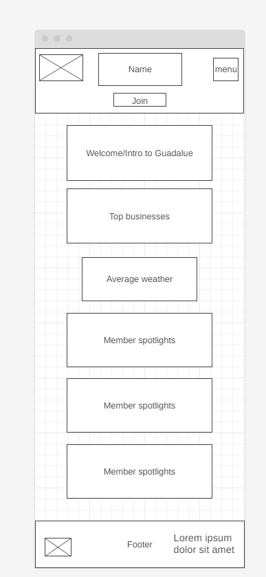
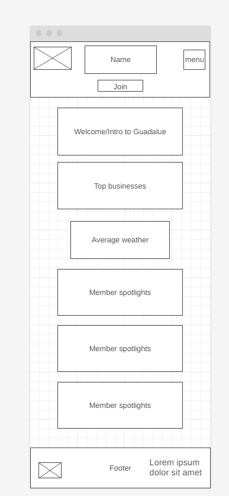

PLAN SITE
SITE NAME
GuadaSells Chamber of Commerce: Named after the place where I live which is Guadalupe
SITE PURPOSE
The GuadaSells Chamber of Commerce will act as a webiste to promote the commerce of the town, offering to the ousiders a better view of the things offered here. This will seek to make the place attractive to buy products or even considering spending a life in the mentioned place
SCENARIOS
In what ways does the website provide information that might attract individuals considering relocating to GuadaSells? A/It will show adventages such as near businesses and their price rates
Are there dedicated sections or features highlighting different businesses and their offerings? A/Top performer businesses will have a special place and their top product in the web
Are there details about the community, lifestyle, and amenities that make it an appealing place to live? A/ Yes, there will be details about the life style
COLOR SCHEMA
| Primary | Secondary | Third |
|---|---|---|
| #30638E | #000000 | #929487 |
TYPOGRAPHY
Headers: Playfair Display (used in titles/headers/navigations links)
Paragraphs: Roboto (used mostly in the body part but pretty much everywhere)
WIREFRAMES
 
